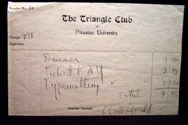
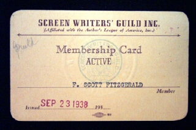

1909-1978

"Bookends" of Fitzgerald's writing career: The Triangle
Club at Princeton (1913-1917) and Hollywood (1937-1940)
Manuscripts Division
Department of Rare Books
and Special Collections
Princeton University
Library
1993 (Revised 2001)
| I. Writings | ||||
| Novels | ||||
| Short Stories | ||||
| Articles | ||||
| Drama Scripts | ||||
| Moving Picture Scripts | ||||
| Poems | ||||
| Radio Scripts, Television, etc. | ||||
| Book Reviews | ||||
| Burlesques | ||||
| Published [Printed] Material | ||||
| "Published Juvenilia of F. Scott Fitzgerald..." | ||||
| "Various Contributions of Scott Fitzgerald..." | ||||
| "The Apprentice Fiction of F. Scott Fitzgerald..." | ||||
| "Excerpts from the Nassau Literary Magazine..." | ||||
| Newman News Easter issues (1912-1913) | ||||
| Notes | ||||
| Lists | ||||
| II. Correspondence (letters sent by Fitzgerald) | ||||
| III. Documents | ||||
| IV. Photographs | ||||
| V. Memorabilia and Clippings | ||||
| VI. Supplemental Groups of Papers | ||||
| Bertie Barr Additions | ||||
| Articles | ||||
| Short Stories | ||||
| Poetry | ||||
| Correspondence | ||||
| Esquire Additions | ||||
| Articles | ||||
| Short Stories | ||||
| Correspondence | ||||
| Sheilah Graham Additions | ||||
| Miscellaneous | ||||
| Short Stories | ||||
| Articles | ||||
| Poetry | ||||
| Correspondence | ||||
| Laura Guthrie Hearne Additions | ||||
| Miscellaneous | ||||
| Works of Laura Guthrie Hearne | ||||
| Poetry | ||||
| Notes | ||||
| Correspondence | ||||
| Marie Shank Additions | ||||
| Miscellaneous | ||||
| Drama Scripts | ||||
| Novels | ||||
| Articles | ||||
| Short Stories | ||||
| Poetry | ||||
| Correspondence | ||||
| VII. F. Scott Fitzgerald as Subject | ||||
| Correspondence and Articles | ||||
| Printed Matter | ||||
| VIII. Miscellaneous Material | ||||
| Periodicals relating to FSF and family | ||||
| Brochures regarding FSF | ||||
| Keepsakes | ||||
| Clippings | ||||
| Original Folders from Fitzgerald Collection | ||||
| Gatsby Movie Publicity (1974) | ||||
| F. Scott Fitzgerald Recordings | ||||
| IX. Miscellaneous Additions | ||||
| 2 drawings by Zelda (framed), one includes ALS by her to Dr. Rennie | ||||
| Poem to Mildred McNally & related material | ||||
| P.U. grade transcripts, 1918 | ||||
| Short Story: "That Kind of Party" | ||||
| Novel: Tender Is the Night, page proofs | ||||
| Letter: FSF to Isaac Benesch, 1933 | ||||
| Short Story: "Two for a Cent," photocopies of 2 variant editions | ||||
| Correspondence (ZF, FSF & Dr. Rennie) | ||||
| Oversize photographs | ||||
| Oversize scrapbook volumes | ||||
Occasionally, a reference is made to the following locations using the abbreviations noted below:
"Published Juvenilia of F. Scott Fitzgerald, 1909-1917." A bound collection. Abbr.: "Published Juvenilia..." (Box 2, Folder 24)For the convenience of users, descriptions of related items in these additional papers have been filed under the appropriate series category I-IV. Hence, there is just the one place to look for Fitzgerald photographs, etc. From series V-VIII, a box/folder listing is provided. As miscellaneous items are acquired, they are listed both in order at the end and, if possible, under the appropriate series I-IV."Various Contributions of Scott Fitzgerald to the Nassau Literary Magazine of Princeton, 1915-1917." A bound collection. Abbr.: "Various Contributions..." (Box 2, Folder 25)
"The Apprentice Fiction of F. Scott Fitzgerald, 1909-1917." Two folders of photocopied material. Abbr.: "The Apprentice Fiction..." (Box 3, Folders 1-2)
"Excerpts from the Nassau Literary Magazine--1917." A folder of photocopied material. Abbr.: "Excerpts from the Nassau..." (Box 3, Folder 3)
Newman News. A folder containing Easter issues: 1912, 1913. (Box 3, Folder 4)
Range of Collection Dates: 1909-1978
Size: 21.0 linear ft. (24 archival boxes, 1 box of tape reels, 1 oversize flat box, 2 oversize folders)
Provenance: The collection has developed principally through gifts from Fitzgerald's friends--Marie Shank and Sheilah Graham in 1959, Bertie Barr and Esquire magazine in 1962--and a purchase from Laura Hearne in 1967. In addition, there was a significant, anonymous gift in 1992.
Restrictions: There are no closed or sealed materials in the F. Scott Fitzgerald Additional Papers. However, for legal or preservation reasons, only microfilm or preservation photocopies are generally available for certain Fitzgerald materials. Both the F. Scott Fitzgerald Papers (C0187) and the F. Scott Fitzgerald Additional Papers (C0188) have been heavily used since 1950, and a substantial portion of papers has been published and is widely available in research libraries. Accordingly, potential researchers should understand the relationship of the papers themselves to information available in print, as here described.
Manuscripts: Researchers should be aware that facsimiles of the manuscripts of Fitzgerald's books and articles were published in the multi-volume series F. Scott Fitzgerald Manuscripts, edited by Matthew J. Bruccoli and Alan Margolies (New York: Garland Publishing Company, 1990). Complete sets of the facsimile edition are available at more than fifty research libraries (including Firestone Library). The original manuscript of Fitzgerald's ledger is not at Princeton. One should use F. Scott Fitzgerald's Ledger: A Facsimile, with an introduction by Matthew J. Bruccoli (Washington, D.C.: NCR/Microcard Editions, 1972) or refer to the photostats in Box 60 (C0187). With respect to using Fitzgerald's manuscripts at Princeton, researchers should be aware that the 1950 deed of gift stipulates that Fitzgerald's manuscripts were to be microfilmed to preserve the originals, and that researchers must use the microfilm for most purposes. Researchers who believe that there are compelling reasons why they must have access to the original manuscripts instead of the facsimile edition or microfilm must request permission in advance from the Curator of Manuscripts. Researchers should also be aware of the Cambridge Edition of the Works of F. Scott Fitzgerald, edited by James L. W. West III (Cambridge, England, and New York: Cambridge University Press, 1991- ). Based on Fitzgerald's manuscripts and published editions, the Cambridge edition will eventually number 17 volumes.
Correspondence: A large portion of correspondence in the F. Scott Fitzgerald Papers and other collections at Princeton has been published in critical editions. The following editions of correspondence (listed alphabetically by editor) can be found in most research libraries: As Ever Scott Fitz--: Letters between F. Scott Fitzgerald and His Literary Agent Harold Ober, edited by Matthew J. Bruccoli with Jennifer Atkinson (Philadelphia: Lippincott, 1972); A Life in Letters: F. Scott Fitzgerald, edited by Matthew J. Bruccoli with Judith S. Baughman (New York: Scribner's, 1994); Correspondence of F. Scott Fitzgerald, edited by Matthew J. Bruccoli and Margaret Duggan with Susan Walker (New York: Random House, 1980); Dear Scott, Dearest Zelda: The Love Letters of F. Scott and Zelda Fitzgerald, edited by Jackson R. Bryer and Cathy Barks (New York: St. Martin's Press, 2002); Dear Scott/Dear Max: The Fitzgerald-Perkins Correspondence, edited by John Kuehl and Jackson R. Bryer (New York: Scribner, 1971); Letters of F. Scott Fitzgerald, edited by Andrew Turnbull (New York: Scribner, 1963); Scott Fitzgerald: Letters to his Daughter, edited by Andrew Turnbull with an introduction by Frances Fitzgerald Lanahan (New York: Scribner, 1965).
Photographs: Photographs of F. Scott Fitzgerald and Zelda Fitzgerald are very frequently requested by publishers, newspapers, magazines, and documentary film makers. Researchers should be aware that the Department of Rare Books and Special Collections maintains a large file of copy negatives to facilitate reproduction of these photographs. Most of the photographs in the F. Scott Fitzgerald Papers and other collections at Princeton were reproduced in The Romantic Egoists: A Pictorial Autobiography from the Scrapbooks and Albums of Scott and Zelda Fitzgerald, edited by Matthew J. Bruccoli, Scottie Fitzgerald Smith, and Joan P. Kerr (New York: Scribner, 1974). Often-requested images can be viewed online by visiting the Library's RBSC Portfolio at http://libweb2.princeton.edu/rbsc2/portfolio/portfolio.htmlPhotocopying, literary rights, and citation: Single photocopies may be made for research purposes. Most photoduplication will be in form of duplicate microfilm and photographic prints. Photocopies are not provided when microfilm exists. Formerly closed materials relating to Zelda Fitzgerald's illness and hospitalization are not available for photoduplication. No further photoduplication of copies of material in the collection can be made when Princeton University Library does not own the original. Permission to publish material from the collection must be requested from the Associate University Librarian for Rare Books and Special Collections. The library has no information on the status of literary rights in the collection and researchers are responsible for determining any questions of copyright. The Fitzgerald copyright is owned by the Fitzgerald Literary Trust and administered by Harold Ober Associates, Inc. Researchers are therefore advised to address all questions about Fitzgerald literary rights to Harold Ober Associates Inc., 425 Madison Avenue, New York, New York 10017 (Telephone: 212-759-8600; FAX: 212-759-9428). Publication, reproduction, and broadcast of the image of F. Scott Fitzgerald and Zelda Fitzgerald involve additional rights owned by the Fitzgerald Literary Trust and administered by Harold Ober Associates, Inc. Citations should be as follows: F. Scott Fitzgerald Additional Papers, Box #, Folder #, Department of Rare Books and Special Collections, Princeton University Library.
Conservation Note: In May 1999, the Princeton University Library was awarded a federal grant under the "Save America's Treasures" program, administered by the National Endowment for the Humanities (NEH), to deacidify, repair, and rehouse the F. Scott Fitzgerald Papers. Work was completed in August 2001.
Microfilm Note: Due to additional microfilming in the summer of 2001, as well as the rehousing of the collection, some of the microfilm box numbers may not correspond to the manuscript box numbers listed in "A Guide to Microfilm for F. Scott Fitzgerald Papers." The "Guide" will be revised and updated as soon as possible.
Fitzgerald went on to publish three more novels in his lifetime: The
Beautiful and Damned (1922), The Great Gatsby (1925), and Tender
Is the Night: A Romance (1934). His last, and unfinished, novel, The
Last Tycoon, was published posthumously in 1941. Besides his novels,
Fitzgerald also wrote numerous articles and short stories, which were published
in such magazines as The Saturday Evening Post and Esquire.
He also worked as a screenwriter in Hollywood, first with Metro-Goldwyn-Mayer
(he had a hand in writing the script for Gone with the Wind), then
as a freelancer for other studios. In Hollywood, he met Sheilah Graham,
a film columnist. They had a relationship which was, at times, stormy,
due to Fitzgerald's alcohol-abuse problem. He died at her apartment in
Hollywood of a sudden heart attack on December 21, 1940.
| F. Scott Fitzgerald Chronology | ||
| 1896 | Born on September 24 in St. Paul, Minnesota | |
| 1913 | Entered Princeton University as an undergraduate student | |
| 1916 | Withdrew from Princeton University | |
| 1917 | Re-entered Princeton but did not graduate | |
| Entered army; October - appointed second lieutenant | ||
| 1918 | Met Zelda Sayre in Montgomery, Alabama | |
| 1919 | Discharged from army | |
| Worked for a New York advertising agency | ||
| 1920 | March - published This Side of Paradise | |
| April 3 - married Zelda Sayre | ||
| September - published Flappers and Philosophers (stories) | ||
| 1921 | October - daughter Frances Scott Fitzgerald ("Scottie") born | |
| 1922 | March - published The Beautiful and Damned | |
| September - published Tales of the Jazz Age (stories) | ||
| 1925 | March - published The Great Gatsby | |
| 1925-1926 | Met Ernest Hemingway in Paris | |
| 1926 | February - published All the Sad Young Men (stories) | |
| 1927 | Met Irving Thalberg, producer of Metro-Goldwyn-Mayer Studios (later the primary model for the hero of The Last Tycoon) | |
| 1930 | Zelda had breakdown, hospitalized at a sanatorium in Switzerland | |
| 1931 | Zelda released from sanatorium and the Fitzgeralds returned to live in the United States | |
| 1933 | Zelda had two more breakdowns, entered various asylums | |
| 1934 | April - published Tender Is the Night | |
| 1935 | Published Taps at Reveille (stories) | |
| 1937 | July - went to Hollywood, California, to work as a screenwriter at MGM studios | |
| Met Sheilah Graham | ||
| 1940 | December 21 - died of sudden heart attack in Hollywood | |
| 1941 | The Last Tycoon (unfinished) published posthumously | |
Consists of additional (i.e., in addition to the F. Scott Fitzgerald Papers) writings, including published juvenilia, letters, documents, photographs, tape recordings, and memorabilia of Fitzgerald (Princeton Class of 1917), and material of others about him. Included are 7 boxes of papers presented by several of Fitzgerald's friends of the 1930s and 1940: Bertie Barr, Esquire magazine, which published many of the Pat Hobby stories, Sheilah Graham, Laura Guthrie Hearne, and Marie Shank. There are also two film versions of Tender Is the Night, David Hertz' screenplay (1947) and that of Ivan Moffat (1961).
Arrangement
The collection has been organized into the following series: I. Writings, II. Correspondence, III. Documents, IV. Photographs, V. Memorabilia and Printed Matter, VI. Supplemental Groups of Papers, VII. F. Scott Fitzgerald as Subject, VIII. Miscellaneous Material, and IX. Miscellaneous Additions.
Added Entries
The following added entries have been assigned to this collection to highlight significant sources (other than the main entry), subjects, and forms of the collection's materials. Where possible Library of Congress Subject Headings have been used, and the forms of names reflect international cataloging standards. As a result, all of these entries may be searched in the Department's database (MASC), and in the Library's online catalog to find other related material.
People: Barr, Bertie
Graham, Sheilah, 1908?-1988
Hearne, Laura Guthrie
Shank, Marie
Corporate Bodies: Esquire
Subject Headings (in uppercase) / Form Headings (in upper and lower case):
American fiction--20th century
Beloved infidel / Sheilah Graham
Fitzgerald, F. Scott (Francis Scott), 1896-1940--Photographs
Graham, Sheilah, 1908?-1988--Photographs
Motion picture plays--United States
Novelists, American--20th century--Letters
Novelists, American--20th century--Manuscripts
Phonotapes
Princeton University--Alumni (Class of 1917)--Letters
Princeton University--Alumni (Class of 1917)--Mansucripts
Scrapbooks, American--20th century
Short stories, American--20th century
Tender is the night (screenplay) / David
Hertz
Tender is the night (screenplay) / Ivan Moffat